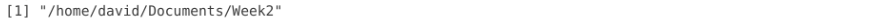
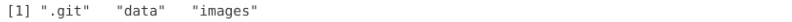
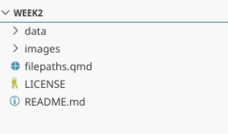
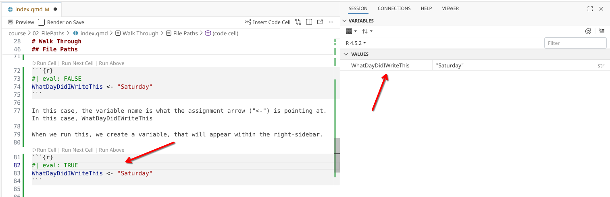
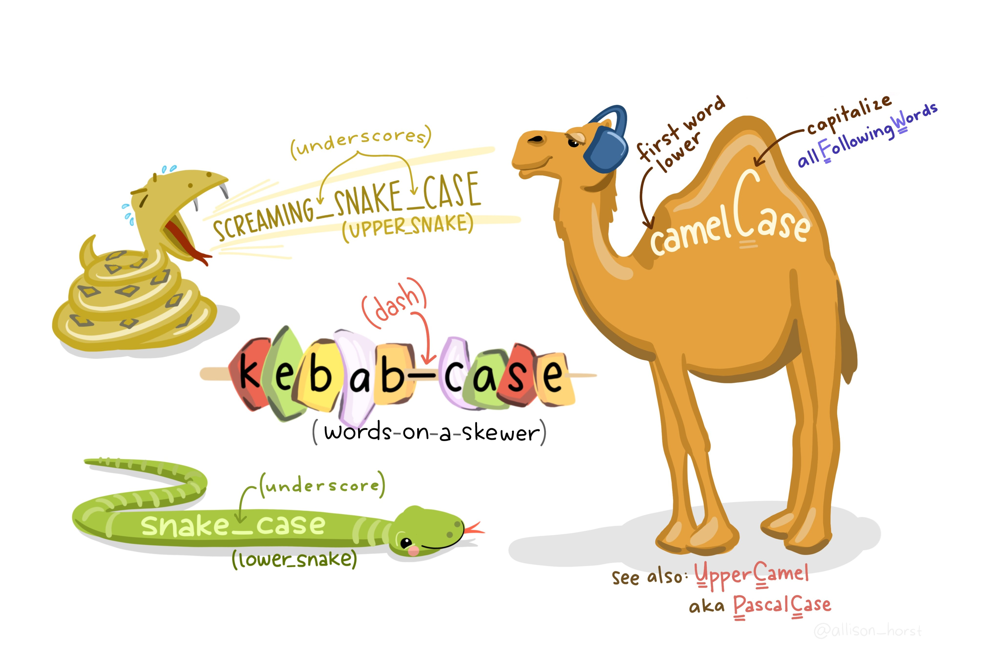
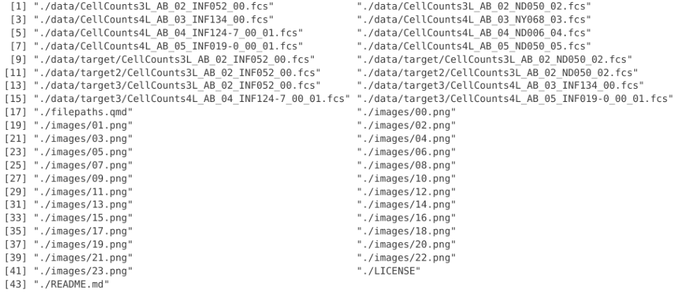

getwd()02 - File Paths


For the YouTube livestream recording, see here
For screen-shot slides, click here
Welcome to the second week of Cytometry in R! This week we will learn about file.path, namely, how to communicate to our computer (and R) where various files are stored.
Important
Before getting started, please make sure you have completed the creating a GitHub and Workstation Setup walk-throughs, since we will begin where they left off once the required software was successfully installed. Having read-through how to use version control using Git will additionally be useful.
Background
When flow cytometrist first start learning how to code, we tend to think big picture: “I want to take my files, normalize them, cluster them, analyze them, and finally plot them”. When we first start writing code, we tend to plan what we will write in similarly broad strokes.
Our computers by contrast “think” in small incremental steps: “First locate this folder, list the files present, select these specific ones, import them into R, load the normalization package, pass the first file in, etc.”. These steps when combined algorithmically add up to form the bigger picture.
The challenge when first starting to learn how to code is developing a coding mindset in which we think not in broad strokes, but about what the next step will be programmatically.
We will start working on our own “coding mindsets” by working with file paths, as they communicate to our computer where to find our experiment files, and tend to be one of the early points of conflict and frustration. In the process, we will also cover additional concepts of R programming generally, including how to create/name variables, and look up the class/type of a particular object.
Set Up
Before we begin, let’s make sure you get the data needed for today transferred to your local computer, and then get the .fcs files copied over from there to your own working project folder. This is the process you will repeat each week throughout the course.
For YouTube walkthrough of this process, click here
New Repository
First off, login to your GitHub account. Once there, you will select the options to create a new repository (similar to what you did during Using GitHub)

For this week, let’s set this new repository up as a private repository, and call it Week2. This will keep things consistent with the file.paths we will be showing in the examples.

Once the new repository has been created, copy the URL.

Next, open up Positron, set the interpreter to use R, and then select the option to bring in a “New Folder from Git”.

Paste in your new repository’s url. Additionally, if you want to match file.paths shown in the examples, set your storage location to your local Documents folder (please note the start of the file.path will look differently depending on whether you are on Windows, MacOS, or Linux).

Your new repository will then be imported from GitHub. Once this is done, create two subfolders (data and images) and a new .qmd file (naming it filepaths.qmd).

Sync
With this done, return to GitHub and open your forked version of the CytometryInR course folder. If you haven’t yet done so, click on sync to bring in this week’s code and datasets.

Returning to Positron, you will need to switch Project Folders, switching from Week2 over to CytometryInR.

Pull
Once CytometryInR project folder has opened, you will need to pull in the new data from GitHub to your local computer.

Copy Files to Week2
Once this is done, you will see within the course folder, containing this weeks folder (02_FilePaths). Within it there is a data folder with .fcs files. To avoid causing conflicts when bringing in next week’s materials, you will want to manually copy over these .fcs files (via your File Explorer) to the data folder within your “Week2” Project Folder.

Commit and Push
When you reopen your Week2 project folder in Positron, you should now be able to see the .fcs files within the data folder. Next, from the action bar on the far left, select the Source Control tab. Stage all the changes (as was done in Using Git), and write a short commit message.

With these files now being tracked by version control, push (ie. send) your changes to GitHub so that they are remotely backed up.

And with this setup complete, you are now ready to proceed. Remember, run code and write notes in your working project folder (Week2 or otherwise named) to avoid conflicts next week in the CytometryInR folder when you are trying to bring in the Week #3 code and datasets.
Walk Through
Working Directory
Now that we are back in our Week2 folder, let’s start by seeing our current location similarly to how our computer perceives it.
We will use getwd() function (ie. get working directory) to return the location of the folder we are currently inside of. For example, when getwd() is run within my Week2 project folder, I see the following location

This returns a file path. The final location (Week2 in this case) is the Working Directory. Your computer when working in R will be descern other locations in relation to this directory.
Directories
Within this working directory, we have a variety of project folders and files related to the course. We can see the folders that are present using the list.dirs() function.
list.dirs(path=".", full.names=FALSE, recursive=FALSE)
Within this list.dirs() function, we are specifying two arguments with which we will be working with later today, full.names and recursive. For now, lets set their arguments to FALSE, which means they conditions they implement are inactive (turned off).
The path argument is currently set to “.”, which is a stand-in for the present directory. In R, if an argument is not specified directly, it is inferred based on an order of expected arguments. Thus, if not present, we could still get the same output as seen before.
list.dirs(full.names=FALSE, recursive=FALSE)Within Positron, in addition to visible folders, we also have hidden folders (denoted by the “.” in front of the folder name when using list.dirs()). In the case of one of our course website folders, we can see a “.quarto” folder shown in a lighter gray . The “.git” folder we saw from list.dirs() is typically hidden when viewing from Positron.

In the case of Week2, the two not-hidden folders we created are listed. We will see how to navigate these in a second.

Variables
Before exploring file paths, we need to have some basic R code knowledge that we can use to work with them. Within R, we have the ability to assign particular values (be they character strings, numbers or logicals) to objects (ie. variables) that can be used when called upon later.
For example:
WhatDayDidIWriteThis <- "Saturday"In this case, the variable name is what the assignment arrow (“<-”) is pointing at. In this case, WhatDayDidIWriteThis
When we run this, we create a variable, that will appear within the right-sidebar.
WhatDayDidIWriteThis <- "Saturday"
These variables can subsequently be retrieved by printing (ie. running) the name of the variable
WhatDayDidIWriteThis [1] "Saturday"You can create variables with almost any name you can think of
TopSecretMeetingDay <- "Saturday"With a few exceptions. R doesn’t play well with spaces:
Top Secret Meeting Day <- "Saturday"Error in parse(text = input): <text>:1:5: unexpected symbol
1: Top Secret
^But does play well with underscores:
Top_Secret_Meeting_Day <- "Saturday"The above (with individual words separated by _) is collectively known as snake case. The alternate way to help delineate variable names is “camelCase”, with first letter of each word being capitalized (seen in the previous example).

TopSecretMeetingDay[1] "Saturday"You can overwrite a Variable name by assigning a different value to it:
TopSecretMeetingDay <- "Monday"TopSecretMeetingDay[1] "Monday"You can also remove individual variables via the rm function
rm(Top_Secret_Meeting_Day)Or if trying to remove all, via the right sidebar

In the prior case, we are creating a variable that is a “string” of character values, due to our use of “” around the word. We can see this when we use the str() function.
Fluorophores <- "FITC"
str(Fluorophores) chr "FITC"The “chr” in front denotating that Fluorophores contains a character string.
This could also be retrieved using the class() function.
class(Fluorophores)[1] "character"Alternatively, we could assign a numeric value to a variable
Fluorophores <- 29
str(Fluorophores) num 29Which returns “num”, ie. numeric.
We can also specify a logical (ie. True or FALSE) to a particular object
IsPerCPCy5AGoodFluorophore <- FALSE
str(IsPerCPCy5AGoodFluorophore) logi FALSEWhich returns logi in front, denoting this variable contains a logical value.
Last week, when we were installing dplyr, the reason that installation failed was install.packages() expects a character string. However, when we left off the ““, it looked within our local environments created variables for the dplyr variable, couldn’t find it, and thus failed.
We could of course, have assigned a character value to a variable name, and then used that variable name, which would have worked.
PackageToInstall <- "dplyr"
install.packages(PackageToInstall)Indexing
Not all variables contain single objects.
For example, we can modify Fluorophores and add additional entries:
Fluorophores <- c("BV421", "FITC", "PE", "APC")
str(Fluorophores) chr [1:4] "BV421" "FITC" "PE" "APC"The c stands for concatenate. It concatenates the objects into a larger object, known as a vector.
In this case, you notice in addition to the specification the values are characters, we get a [1:4], denoting four objects are present.
We can similarly retrieve this information using the length() function
length(Fluorophores)[1] 4When multiple objects are present, we can specify them individidually by providing their index number within square brackets [].
Fluorophores[1][1] "BV421"Fluorophores[3][1] "PE"Or specify in sequence using a colon (:)
Fluorophores[3:4][1] "PE" "APC"Or if not adjacent, reusing c within the square brackets
Fluorophores[c(1,4)][1] "BV421" "APC" We will revisit these concepts throughout the course, with what we have covered today, this will help us create file.paths and select fcs files that we want to work with via index number.
Listing Files
After this detour into variables and indexing, let’s return our focus to how to use these in context of file paths. Working from within our Week2 project folder, let’s see what directories (folders) are present
list.dirs(path=".", full.names=FALSE, recursive=FALSE)
We can also list any files that are present within our working directory using the list.files() function.
list.files()
In this case, in addition to our filepaths.qmd file, we can see the LICENSE and README files created when we set up the repository.
We can also specify a particular folder we want to show items present within by changing the path argument. For example, if we wanted to see the contents of the “data” folder
list.files(path="data", full.names=FALSE, recursive=FALSE)
Which in this case returns the fcs files we copied over at the start of this lesson.
In this case, there are no folders under “data”. Let’s go ahead and create a new one, calling it target.

Creating directories
Alternatively, we can also create a folder via R using the dir.create() function. Since we want it within data, we would modify the path accordingly
NewFolderLocation <- file.path("data", "target2")
dir.create(path=NewFolderLocation)
Before continuing, let’s copy the first two .fcs files into both target and target2.

Given our working directory is set the top-level of the Week2 project folder, we can’t just check inside nested target folders directly. If we attempt to:
list.files(path="target", full.names=FALSE, recursive=FALSE)character(0)No files are returned (ie, character(0)), since from our computers perspective, “target” doesn’t exist within the active working directory.
file.exists("target")[1] FALSEOn the other hand, within it’s view, it knows that the data folder exist
file.exists("data")
So here we encounter the first challenge when communicating to our computer where to search for and find files. We need to provide a file.path that incorporates the path of folders between where the computer is currently at (ie. the working directory) and the target file itself.
File Paths
One way we can do this is through a file.path argument. We could potentially provide this by adding either a / or a into the path argument, depending on your computers operating system.
list.files(path="data/target", full.names=FALSE, recursive=FALSE)
While this works in your particular context, if you are sharing the code with others who have a different operating system, these hard-coded “/” or “" will cause the code for them to error out at these particular steps.
For that reason, it is better to assemble a file.path using the file.path() function. This function takes into account the operating system, removing your need to have to worry about this particular computing nuance, and write code that is reproducible and replicable for everyone.
FolderLocation <- file.path("data", "target")
FolderLocation[1] "data/target"list.files(path=FolderLocation, full.names=FALSE, recursive=FALSE)
We can also append additional locations to existing file paths, by including the variable name within the file.path() we are creating.
FolderLocation <- "data"
ScreenshotFolder <- file.path(FolderLocation, "target")
ScreenshotFolder[1] "data/target"list.files(path=ScreenshotFolder, full.names=FALSE, recursive=FALSE)
Additionally, list.files() has the ability to filter for files that contain a particular character string. This can be useful is we are searching for “.fcs” or “.csv” files, but also for files that contain a particular word. In the case of the ScreenshotFolders
list.files(path=ScreenshotFolder, pattern="ND050", full.names=FALSE, recursive=FALSE)
You will notice, the index numbers are in the context of what is filtered, not all the folder contents.
Selecting for Patterns
If we currently listed the files within data, we get a return that looks like this:
list.files("data", full.names=FALSE, recursive=FALSE)
As you can see, we are getting back both folders and individual .fcs files. We could consequently change the pattern to provide a character string that will only return the .fcs files. We will go ahead and assign this list to a variable named files, for later retrieval.
files <- list.files("data", pattern=".fcs", full.names=FALSE, recursive=FALSE)
files
One of the R packages we will be using througout the course is the stringr package. It contains two functions that can be useful when identifying more complicated character strings. In this case, if we run the str_detect() function to identify which of the .fcs files within the files variable contains the “INF” character string, we get a vector of logical (ie. True or FALSE) outputs corresponding to each file.
# install.packages("stringr") # CRAN
library(stringr)str_detect(files, "INF")
Similar to how we indexed the Fluorophore list (ex. Fluorophore[1:2]) which returned a subset, we can similarly use this logical vector to subset files that returned as TRUE for containing the pattern “INF”
files[str_detect(files, "INF")]
Let’s go ahead and save these subsetted file names to a new variable, called Infants.
Infants <- files[str_detect(files, "INF")]Conditionals
One useful thing is that within R, we can set conditions on whether something is carried out. The most typical conditional you will encounter are the “If” statements. They typically take a form that resembles the following.
NeedCoffee <- TRUE
if (NeedCoffee){
print("Take a break")
}In this case of the above, if the variable within the () is equal to true, the code within the {} will be executed.
NeedCoffee <- TRUE
if (NeedCoffee){
print("Take a break")
}[1] "Take a break"By contrast, when the variable within the () is equal to false, the code within the {} will not be executed.
NeedCoffee <- FALSE
if (NeedCoffee){
print("Take a break")
}These “If” statements will trigger as long as the specified condition within the () is TRUE. For a different example:
RowNumber <- 299
2 + RowNumber > 300[1] TRUEif (2 + RowNumber > 3){
print("Stop Iterating")
}[1] "Stop Iterating"When you add an ! in front a conditional, it flips the expected outcome.
ItsRaining <- TRUE
if (ItsRaining){print("Bring an Umbrella")}[1] "Bring an Umbrella"!ItsRaining[1] FALSEif (!ItsRaining){print("Bring an Umbrella")}ItsRaining <- TRUE
if (!ItsRaining){print("Bring Sunglasses")}We will explore more complicated conditionals throughout the course, but for now, let’s implement a couple simple ones in the context of copying over the .fcs files in Infants over to a new target3 folder.
Conditionals in practice
First off, let’s write a conditional to check if there is a target3 folder within data.
files_present <- list.files("data", full.names=FALSE, recursive=FALSE)
files_present
FolderTarget3 <- file.path("data", "target3")
dir.exists(FolderTarget3)
We can write a conditional to create a folder if one does not yet exist.
if (!dir.exists(FolderTarget3)){
dir.create(FolderTarget3)
}
Copying Files
To copy files to another folder location, we use the file.copy() function. It has two arguments that we will be working with, from being the .fcs files, and to being the folder location we wish to transfer them to. If we tried using them as we currently have them:
# Variable Infants containing 4 .fcs file names
file.copy(from=Infants, to=FolderTarget3)
The reason for this error is we are only working with a partial file path, as viewed from our Working directory. In this case, what is needed is the full file.path, so the file.path should also include the upstream folders from your current working directory.
getwd()
In this case, we can update the .fcs files location by switching the full.names argument within list.files() from FALSE, to TRUE.
files_present <- list.files("data", full.names=TRUE, recursive=FALSE)
files_present
And filter for those containing “INF” again
Infants <- files_present[str_detect(files_present, "INF")]And then try again:
# Variable Infants containing 4 .fcs file names
file.copy(from=Infants, to=FolderTarget3)
Removing files.
Just like we can add files via R, we can also remove them. However, when we remove them via this route, they are removed permanently, not sent to the recycle bin. We will revisit how later on in the course after you have gained additional experience with file.paths.
?unlink()Basename
If we look at Infants with the full.names=TRUE, we see the additional pathing folder has been added, allowing us to successfully copy over the files.
Infants
If we were trying to retrieve just the local file names from the full.names, we could do so with basename() function. We will use this in combination with additional arguments later in the course
basename(Infants)
Recursive
And finally that we have created additional nested folders and populated them with fcs files, let’s see what setting list.files() recursive argument to TRUE
all_files_present <- list.files(full.names=TRUE, recursive=TRUE)
all_files_present 
In this case, all files in all folders within the working directory are shown. This can be useful when exploring folder contents, but if there are a lot of files present within the folder, it will take a while to return the list.
Saving changes to Version Control
And as is good practice, to maintain version control, let’s stage all the files and folders we created today within the Week2 Project Folder, write a commit message, and send these files back to GitHub until they are needed again next time.

Wrap-Up
In this session, we started to learn about working directories, file.paths and how to locate files of interest. We also learned how variables (objects) are created in R using the assignment arrow, how they are named, and the general structure (character, numeric, logical) that they are represented as.
This will prove valuable in the next several weeks when working with .fcs files, as the majority of functions we will use for Bioconductor project R packages need file.paths to locate both .fcs files as well as .csv files that contain metadata.
One of the most frequent errors that beginners encounter when trying to load in .fcs files into the flowCore package is not providing the full file.path to the .fcs file of interest.
Next week, having installed the required R packages, and learned a little about variables and file.paths, we will dive into our first cytometry focused session. We will be cracking open an .fcs file and exploring how things are stored within. In the process of seeing how the file contents are organized, we will continue to learn and practice how to create variables, and general object structure types within R. Until then, have a wonderful week!

Additional Resources
Riffomonas: Using paths in R and why you shouldn’t be using setwd (CC179)
Paths, working directories, and projects in R; Learn R Video 13
Demystifying File Paths in R: Navigate Nested Folders with Dr. Padilla
Take-home Problems
Problem 1
Plug in an external hard-drive or USB into your computer. Manually, create a folder within called “TargetFolder”. Try to programmatically specify the file path to identify the folders and files present on your external drive. Then, try to copy your .fcs files from their current folder on your desktop to the TargetFolder on your drive using R. Remember, just copy, no deletion, you need to walk before you can run :D
Problem 2
In this session, we used list.files() with the “full.names argument” set to TRUE, as well as the basename() function to identify specific files. But what if you wanted a particular directory. Run list.files() with “full.names argument” and “recursive” argument set to TRUE, and then search online to find an R function that would retrieve the “” individual directory folders.
Problem 3
R packages often come with internal datasets, that are typically used for use in the help documentation examples. These can be accessed through the use of the system.file() function. See an example below.
system.file("extdata", package = "FlowSOM")Using what we have learned about file.path navigation, search your way down the file.directory of the FlowSOM and flowWorkspace packages, and identify any .fcs files that are present for use in the documentation.